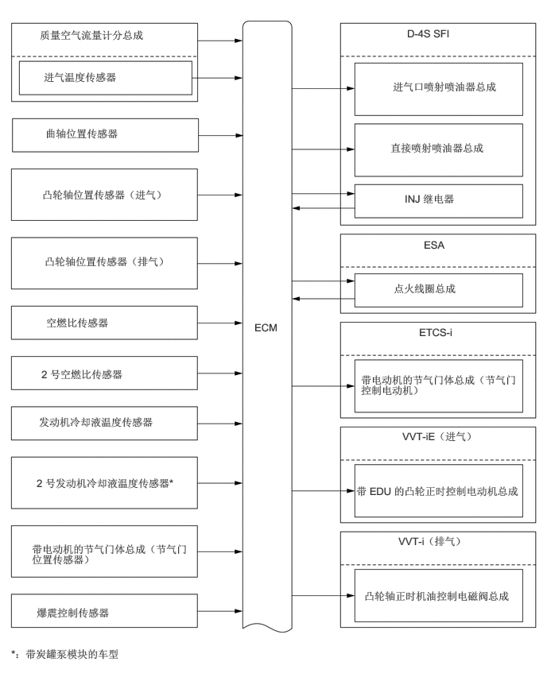

3.333,4.208 3.729,4.438
0.385,0.219
10
false
ECM
0.521,0.375 2.771,0.656
2.24,0.271
10
false
质量空气流量计分总成
0.594,1.667 2.083,1.938
1.479,0.26
10
false
曲轴位置传感器
0.573,0.927 2.531,1.188
1.948,0.25
10
false
进气温度传感器
0.552,2.469 2.219,2.896
1.656,0.417
10
false
凸轮轴位置传感器（进气）
0.583,3.344 2.25,3.771
1.656,0.417
10
false
凸轮轴位置传感器（排气）
0.604,4.146 2.01,4.427
1.396,0.271
10
false
空燃比传感器
0.542,4.823 2.313,5.115
1.76,0.281
10
false
2 号空燃比传感器
0.51,5.448 2.781,5.771
2.26,0.313
10
false
发动机冷却液温度传感器
0.479,6.25 2.615,6.698
2.125,0.438
10
false
2 号发动机冷却液温度传感器*
0.146,8.49 2.667,8.719
2.51,0.219
10
false
*：带炭罐泵模块的车型
0.417,7.115 2.49,7.573
2.063,0.448
10
false
带电动机的节气门体总成（节气门位置传感器）
0.479,7.948 1.906,8.229
1.417,0.271
10
false
爆震控制传感器
5.333,0.354 6.021,0.583
0.677,0.219
10
false
D-4S SFI
5.146,1.052 6.698,1.583
1.542,0.521
10
false
进气口喷射喷油器总成
5.115,1.854 6.354,2.313
1.229,0.448
10
false
直接喷射喷油器总成
5.302,2.521 6,2.813
0.688,0.281
10
false
INJ 继电器
5.552,3.125 5.958,3.375
0.396,0.24
10
false
ESA
5.156,3.698 6.615,3.969
1.448,0.26
10
false
点火线圈总成
5.49,4.271 6.073,4.531
0.573,0.25
10
false
ETCS-i
4.729,4.896 6.823,5.333
2.083,0.427
10
false
带电动机的节气门体总成（节气门控制电动机）
5.271,5.635 6.292,5.896
1.01,0.25
10
false
VVT-iE（进气）
4.667,6.354 6.865,6.719
2.188,0.354
10
false
带 EDU 的凸轮正时控制电动机总成
5.219,7.01 6.292,7.271
1.063,0.25
10
false
VVT-i（排气）
4.771,7.729 6.802,8.021
2.021,0.281
10
false
凸轮轴正时机油控制电磁阀总成